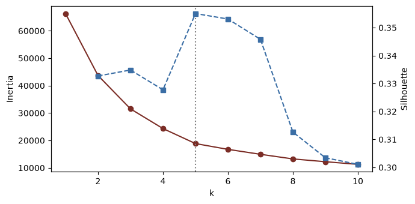
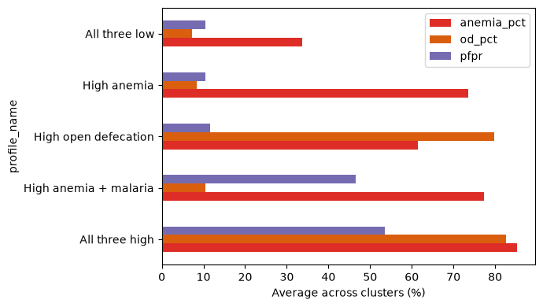

import numpy as np
import pandas as pd
from sklearn.cluster import KMeans, DBSCAN
from sklearn.metrics import silhouette_score
from sklearn.preprocessing import StandardScaler
from config import PRIVATE, PUBLICStep 4. Cluster profiles (k-means) and spatial hotspots (DBSCAN).
- k-means on three standardized measures: anemia, open defecation, malaria. Number of profiles chosen with the elbow method (and silhouette as a check).
- DBSCAN on the locations of clusters in the “all three high” profile, using great-circle (haversine) distance, to find spatial hotspots.
Input : data/private/clusters_features.parquet Output: data/private/clusters_profiles.parquet (private) data/public/kmeans_elbow.csv, kmeans_profiles.csv, dbscan_summary.csv (public)
Run on the author’s computer. The DHS data are private, so the outputs shown here are summaries only (no cluster locations or survey records).
K = 5 # elbow bends around 4-5; silhouette is highest at 5 -> 5 profiles
EPS_KM, MIN_SAMPLES = 50, 15
MEASURES = ["anemia_pct", "od_pct", "pfpr"]cl = pd.read_parquet(PRIVATE / "clusters_features.parquet")
# MAP leaves malaria-free areas (e.g. Lesotho, Eswatini, highlands) blank -> treat as 0 % prevalence
cl["pfpr_missing"] = cl.pfpr.isna().astype(int)
cl["pfpr"] = cl.pfpr.fillna(0)
cl = cl.dropna(subset=MEASURES).reset_index(drop=True)
X = StandardScaler().fit_transform(cl[MEASURES])Elbow
rng = np.random.default_rng(0)
sample = rng.choice(len(X), size=min(8000, len(X)), replace=False)
rows = []
for k in range(1, 11):
km = KMeans(n_clusters=k, n_init=10, random_state=0).fit(X)
sil = silhouette_score(X[sample], km.labels_[sample]) if k > 1 else np.nan
rows.append({"k": k, "inertia": km.inertia_, "silhouette": sil})
elbow = pd.DataFrame(rows)
elbow.to_csv(PUBLIC / "kmeans_elbow.csv", index=False)
print(elbow.round(3).to_string(index=False)) k inertia silhouette
1 66291.000 NaN
2 43696.083 0.333
3 31512.846 0.335
4 24330.701 0.328
5 18853.094 0.355
6 16738.027 0.353
7 14939.232 0.346
8 13246.656 0.313
9 12230.847 0.303
10 11268.609 0.301Final k-means
km = KMeans(n_clusters=K, n_init=25, random_state=0).fit(X)
cl["profile_raw"] = km.labels_
cent = cl.groupby("profile_raw")[MEASURES].mean()
z = (cent - cl[MEASURES].mean()) / cl[MEASURES].std()def name(row):
hi = [lbl for lbl, col in [("anemia", "anemia_pct"), ("open defecation", "od_pct"), ("malaria", "pfpr")]
if row[col] > 0.25]
if len(hi) == 3:
return "All three high"
if not hi:
return "All three low"
return "High " + " + ".join(hi)names = z.apply(name, axis=1)
# make names unique if two profiles share a label
for n, idx in names.groupby(names).groups.items():
if len(idx) > 1:
for j, i in enumerate(sorted(idx, key=lambda i: -z.loc[i].sum())):
names[i] = f"{n} ({'stronger' if j == 0 else 'weaker'})"
order = z.sum(axis=1).sort_values(ascending=False).index # 1 = highest burden
pid = {raw: i + 1 for i, raw in enumerate(order)}
cl["profile"] = cl.profile_raw.map(pid)
cl["profile_name"] = cl.profile_raw.map(names)prof = (cl.groupby(["profile", "profile_name"])
.agg(n_clusters=("anemia_pct", "size"), n_children=("n_children", "sum"),
anemia_pct=("anemia_pct", "mean"), od_pct=("od_pct", "mean"), pfpr=("pfpr", "mean"),
rain_3mo_z=("rain_3mo_z", "mean"), wealth=("wealth", "mean"),
mom_secondary_pct=("mom_secondary_pct", "mean"), urban_pct=("urban", "mean"))
.reset_index())
prof["urban_pct"] *= 100
prof["share_pct"] = 100 * prof.n_clusters / prof.n_clusters.sum()
prof.round(2).to_csv(PUBLIC / "kmeans_profiles.csv", index=False)
print(prof.round(1).to_string(index=False)) profile profile_name n_clusters n_children anemia_pct od_pct pfpr rain_3mo_z wealth mom_secondary_pct urban_pct share_pct
1 All three high 2285 23879 85.3 82.6 53.5 0.3 2.1 5.9 9.9 10.3
2 High anemia + malaria 4547 43001 77.4 10.5 46.5 0.0 2.8 16.6 22.9 20.6
3 High open defecation 3238 39620 61.5 79.9 11.5 0.0 2.0 14.4 7.8 14.7
4 High anemia 6299 74697 73.6 8.4 10.5 -0.0 3.2 26.5 41.3 28.5
5 All three low 5728 55625 33.6 7.2 10.5 -0.0 3.3 30.2 37.8 25.9Dbscan hotspots within the highest-burden profile
top = cl.profile == 1
coords = np.radians(cl.loc[top, ["lat", "lon"]].to_numpy())
db = DBSCAN(eps=EPS_KM / 6371.0, min_samples=MIN_SAMPLES, metric="haversine",
algorithm="ball_tree").fit(coords)
cl["hotspot"] = -1
cl.loc[top, "hotspot"] = db.labels_
cl["in_hotspot"] = (cl.hotspot >= 0).astype(int)hs = (cl[cl.hotspot >= 0].groupby("hotspot")
.agg(n_clusters=("lat", "size"), countries=("country", lambda s: ", ".join(sorted(s.unique()))),
anemia_pct=("anemia_pct", "mean"), od_pct=("od_pct", "mean"), pfpr=("pfpr", "mean"))
.sort_values("n_clusters", ascending=False).reset_index(drop=True))
hs.index = hs.index + 1
hs.index.name = "hotspot"
hs.round(1).to_csv(PUBLIC / "dbscan_summary.csv")
print(f"\nDBSCAN: {top.sum():,} clusters in profile 1 -> {len(hs)} hotspots, "
f"{cl.in_hotspot.sum():,} clusters in a hotspot, {(db.labels_ == -1).sum():,} scattered")
print(hs.head(15).round(1).to_string())
DBSCAN: 2,285 clusters in profile 1 -> 7 hotspots, 1,578 clusters in a hotspot, 707 scattered
n_clusters countries anemia_pct od_pct pfpr
hotspot
1 1177 Benin, Burkina Faso, Ghana, Mali, Nigeria, Togo 85.9 87.7 57.4
2 168 Guinea, Liberia, Sierra Leone 81.2 74.4 46.3
3 95 Burkina Faso, Mali 91.1 74.2 62.6
4 49 Benin, Niger, Nigeria 82.4 82.5 44.1
5 36 Guinea 78.8 73.0 41.8
6 32 Burkina Faso, Mali 95.7 71.9 68.5
7 21 Liberia 68.9 81.4 54.4Sensitivity: how do hotspots change with the search radius?
sens = []
for eps in (25, 50, 75, 100):
lab = DBSCAN(eps=eps / 6371.0, min_samples=MIN_SAMPLES, metric="haversine",
algorithm="ball_tree").fit(coords).labels_
cl[f"hot_{eps}"] = 0
cl.loc[top, f"hot_{eps}"] = (lab >= 0).astype(int)
sens.append({"eps_km": eps, "n_hotspots": int(lab.max() + 1), "clusters_in_hotspots": int((lab >= 0).sum()),
"share_pct": round(100 * (lab >= 0).mean(), 1)})
pd.DataFrame(sens).to_csv(PUBLIC / "dbscan_sensitivity.csv", index=False)
print(pd.DataFrame(sens).to_string(index=False)) eps_km n_hotspots clusters_in_hotspots share_pct
25 11 483 21.1
50 7 1578 69.1
75 6 1952 85.4
100 5 2018 88.3cl.drop(columns="profile_raw").to_parquet(PRIVATE / "clusters_profiles.parquet", index=False)Elbow and silhouette
import matplotlib.pyplot as plt
fig, ax = plt.subplots(figsize=(7, 3.5))
ax.plot(elbow.k, elbow.inertia, "o-", color="#7b2d26"); ax.set(xlabel="k", ylabel="Inertia")
ax2 = ax.twinx(); ax2.plot(elbow.k, elbow.silhouette, "s--", color="#3b6ea5"); ax2.set_ylabel("Silhouette")
ax.axvline(K, color="grey", ls=":")
plt.tight_layout(); plt.show()
Profile averages
prof.set_index("profile_name")[["anemia_pct", "od_pct", "pfpr"]].plot.barh(
figsize=(7, 4), color=["#de2d26", "#d95f0e", "#756bb1"])
plt.xlabel("Average across clusters (%)"); plt.tight_layout(); plt.show()